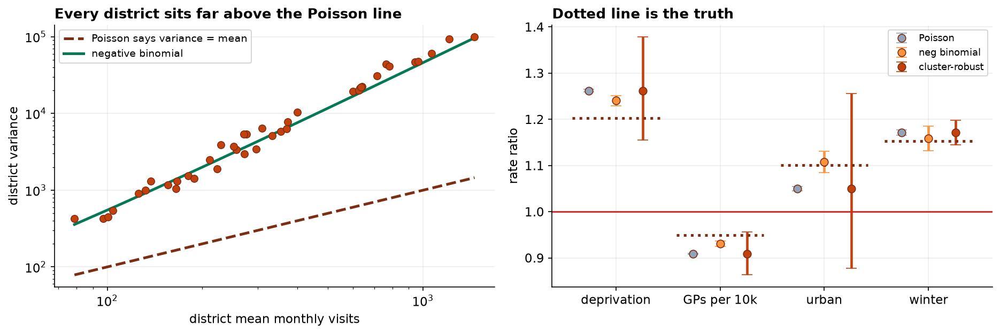

Count Regression for District-Level Emergency Demand: Exposure, Overdispersion and Interval Coverage
A Poisson GLM with a population offset, three treatments for overdispersion, and an assessment of which produces intervals that cover the generating values.
Objective. To estimate associations between district characteristics and the rate of emergency department attendance, and to establish which variance treatment yields valid inference. Methods. Poisson generalized linear models were fitted to monthly visit counts for 40 districts over 48 months (1,884 usable district-months) with log population as an offset. Overdispersion was assessed by the Pearson chi-square and deviance statistics relative to residual degrees of freedom. Three treatments were compared: quasi-Poisson scaling, a negative binomial GLM, and cluster-robust covariance with districts as clusters. Because the data are simulated with known parameters, the criterion was whether each 95% interval contained the generating value. Results. Omission of the offset reversed the sign of the family-doctor coefficient, from a rate ratio of 1.012 to 0.909. Pearson chi-square per degree of freedom was 42.1 (deviance 40.7), indicating severe overdispersion. Negative binomial standard errors exceeded Poisson's by factors of 3.9 to 4.7; cluster-robust standard errors by factors of 4.7 to 39.5. Interval coverage of the five generating values was 1/5 for Poisson, 3/5 for negative binomial and 5/5 for cluster-robust. The urban coefficient was significant under Poisson (RR 1.050, [1.045, 1.055]) and not under cluster-robust inference (RR 1.050, [0.878, 1.256]). Conclusion. The excess variation is between districts rather than simple overdispersion, and only a treatment addressing the clustering produced valid intervals.
1. Data and exclusions
| Stage | n | Note |
|---|---|---|
| Warehouse export | 1,950 | Executed twice |
| Deduplicated | 1,920 | 40 districts x 48 months |
| Count filed | 1,898 | 24 district-months lost to a feed outage |
| Denominator loaded | 1,884 | 15 rows carried a population of 0, a load failure |
2. Specification and the exposure term
The response is a count of visits per district-month. The linear predictor includes deprivation, family doctors per 10,000 centered at the mean, an urban indicator, a winter indicator and a linear month index, with log population entered as an offset so that coefficients are interpretable as log rate ratios.
| Rate ratio | Without offset | With offset | Generating value |
|---|---|---|---|
| Deprivation, per SD | 1.3774 | 1.2620 | 1.2032 |
| GPs per 10,000 | 1.0120 | 0.9088 | 0.9493 |
| Urban | 1.0869 | 1.0499 | 1.1008 |
| Winter | 1.1659 | 1.1710 | 1.1526 |
The family-doctor coefficient changes sign. With population varying by a factor of 19.2 across districts, a model without the offset estimates associations with the count rather than the rate, and every coefficient absorbs whatever correlates with district size. The offset is not a refinement to the specification; it determines which estimand is being reported.
3. Overdispersion
The Poisson family imposes Var(Y) = E(Y). The fitted model returns a Pearson chi-square of 42.1 per residual degree of freedom and a scaled deviance of 40.7, against an expectation of approximately 1 under correct specification. The raw variance-to-mean ratio of the response is 302.
The consequence is well characterized: the quasi-likelihood score equations for the mean parameters remain unbiased, so the coefficient estimates are approximately correct, while the model-based covariance matrix is understated by approximately the dispersion factor.
4. Three treatments compared on coverage
| Term | Generating RR | Poisson | Negative binomial | Cluster-robust |
|---|---|---|---|---|
| Deprivation | 1.2032 | [1.259, 1.265] miss | [1.230, 1.251] miss | [1.156, 1.378] |
| GPs per 10,000 | 0.9493 | [0.907, 0.910] miss | [0.924, 0.937] miss | [0.863, 0.957] |
| Urban | 1.1008 | [1.045, 1.055] miss | [1.084, 1.131] | [0.878, 1.256] |
| Winter | 1.1526 | [1.165, 1.177] miss | [1.132, 1.186] | [1.145, 1.198] |
| Trend per month | 1.0021 | [1.002, 1.002] | [1.001, 1.003] | [1.001, 1.003] |
| Coverage | — | 1 of 5 | 3 of 5 | 5 of 5 |
The negative binomial accommodates a variance function of the form μ + αμ² while retaining the assumption of independent observations. The excess variation in this panel arises from district-level heterogeneity, with a standard deviation of 0.21 on the log scale, and each district contributes 48 correlated observations. The model therefore widens intervals for dispersion while continuing to treat those 48 months as 48 independent units, and it under-covers on the two coefficients most strongly associated with time-invariant district characteristics.
Cluster-robust covariance estimation, treating the district as the clustering unit, addresses the dependence directly and attains nominal coverage on all five parameters. Standard error inflation relative to Poisson is 39.5-fold for deprivation and 4.7-fold for the winter indicator, and the contrast between those two figures is itself informative: deprivation is time-invariant within a district and winter varies within it, so only the former is affected by between-district dependence.

5. Reported estimates
The overall observed rate is 11.88 visits per 1,000 residents per month. Estimates below use cluster-robust inference.
| Factor | Rate ratio | 95% CI | Visits per 1,000 per month |
|---|---|---|---|
| Deprivation, per SD | 1.262 | [1.156, 1.378] | +3.11 |
| GPs per 10,000, per unit | 0.909 | [0.863, 0.957] | −1.08 |
| Urban | 1.050 | [0.878, 1.256] | +0.59, not established |
| Winter month | 1.171 | [1.145, 1.198] | +2.03 |
6. Discussion
Two independent specification decisions determine whether this analysis answers the intended question. The offset determines the estimand; the variance treatment determines whether the reported uncertainty is credible. Neither is a matter of model fit, and neither is signalled by any diagnostic that appears in default output.
The practical consequence is visible in the urban coefficient, which is unambiguously significant under Poisson and not established under valid inference, with an identical point estimate. Where such an estimate enters a resource allocation formula, the distinction is not academic.
Limitations. The design is observational and the estimates are associations across districts; no causal claim is advanced, and the family-doctor association in particular is subject to confounding by district characteristics not recorded here. The denominator is the recorded population, and registered, resident and catchment definitions differ materially in some districts. The deprivation index is a composite whose construction embeds weighting decisions that the coefficient inherits. Finally, a random-effects or GEE specification would model the district-level heterogeneity explicitly rather than accommodating it in the covariance, and would be the natural next step where district-specific predictions are required.
7. Conclusion
Emergency attendance rates are associated with deprivation (RR 1.262, 95% CI 1.156 to 1.378) and inversely with family doctor supply (RR 0.909, 95% CI 0.863 to 0.957). The urban-rural difference is not established (RR 1.050, 95% CI 0.878 to 1.256). Omission of the population offset reverses the sign of the family-doctor association. Poisson inference is invalid at a dispersion of 42.1, and only cluster-robust covariance estimation attained nominal interval coverage.
References
- Nelder, J. A., & Wedderburn, R. W. M. (1972). Generalized linear models. Journal of the Royal Statistical Society, Series A, 135(3), 370–384.
- Wedderburn, R. W. M. (1974). Quasi-likelihood functions, generalized linear models, and the Gauss-Newton method. Biometrika, 61(3), 439–447.
- Cameron, A. C., & Trivedi, P. K. (2013). Regression Analysis of Count Data (2nd ed.). Cambridge University Press.
- McCullagh, P., & Nelder, J. A. (1989). Generalized Linear Models (2nd ed.). Chapman & Hall.
- Liang, K.-Y., & Zeger, S. L. (1986). Longitudinal data analysis using generalized linear models. Biometrika, 73(1), 13–22.
- Lambert, D. (1992). Zero-inflated Poisson regression, with an application to defects in manufacturing. Technometrics, 34(1), 1–14.
- Ver Hoef, J. M., & Boveng, P. L. (2007). Quasi-Poisson vs. negative binomial regression: how should we model overdispersed count data? Ecology, 88(11), 2766–2772.
- Cameron, A. C., & Miller, D. L. (2015). A practitioner's guide to cluster-robust inference. Journal of Human Resources, 50(2), 317–372.
Reproducibility
The dataset (capstone-emergency-department-visits.xlsx) contains the district-month panel with its data-quality faults intact, the analysis plan as agreed before fitting, and the generating parameters on the log-rate scale. An executable notebook accompanies the chapter and reproduces every estimate, table and figure, including the offset comparison and the coverage assessment. Analyses use NumPy, pandas, statsmodels and Matplotlib.